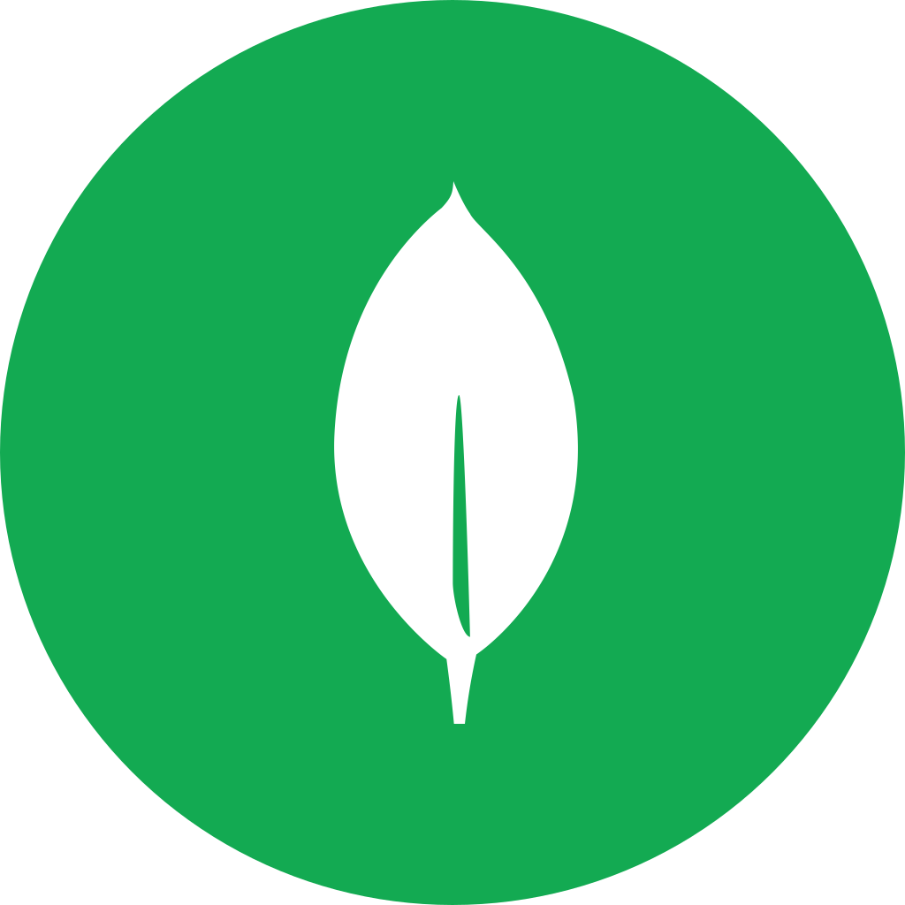
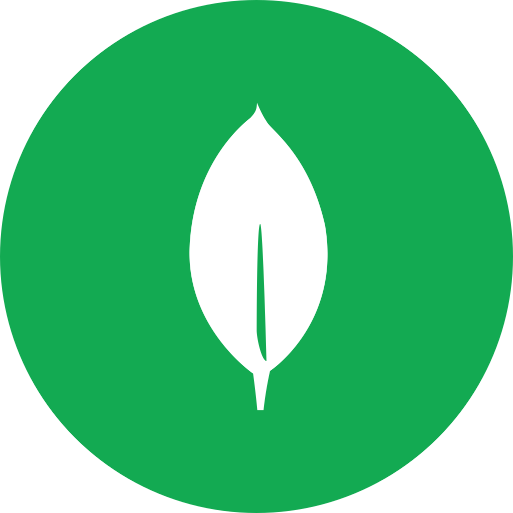

Sobre mi & Skills
Pasaba horas jugando y llegando a la final de cada juego que me topaba. Hasta que un día la curiosidad me llevo a preguntarme; ¿Cómo estarán hechos los juegos?...¿Qué hay detrás de lo que veo?...¿Podía yo hacer algo así?. Cientos de preguntas daban vueltas por mi cabeza. Lo que me llevó a iniciar está aventura. Empecé a investigar e implementar todos los tutoriales/script/videos/etc... que me topaba por la red, (si bien la información era escasa en esos momentos) la curiosidad de entender la lógica y las ganas de darle vida a un personaje encendían esa llamita de motivación para seguir indagando día y noche hasta alcanzar el resultado. Con esa pasión pude desarrollar mis primeros video juegos, páginas webs, sistemas de back-end y dos comunidades de desarrollo de video juegos libre y gratuita. De tanto practicar y practicar, todo ese esfuerzo me llevo a conseguir mis primeros trabajitos freelance y empleo IT, y fue así como me sumergí de lleno en este maravilloso mundo. Hasta que un momento, por cuestiones de la vida, debí alejarme por un tiempo de este mundo, simplemente una pausa, para retomar con más fuerza y más firme que nunca. Apostando con todo a lo que me apasiona, dispuesto a superarme cada día, dando lo mejor de mí en cada proyecto y desafío que se me presente.
FrontEnd


BackEnd


Bases de Datos

 

Mas


Experiencia
Rolling Code School - Tutor de la carrera FullStack MERN | 2023 - Presente
Tomar asistencia, despejar dudas en la comunidad de la comisión o por privado, dar soporte si el mentor lo desea, colaboraciones con el mentor, aportes en la comunidad, control trello, tareas, grabaciones.
FyS Tech Group | 2020 - Presente
-
✅ FullStack Developer | 2022 - Actualidad
Desarrollo full stack de aplicaciones webs, APIs, base de datos y desarrollos a medida según la necesidad del cliente.
- Proyecto Omega para Telefonica (Stack MERN) -
✅ Programador OSB & MuleSoft (Telecom) | 2021 - 2022
Análisis de interfaces en osb11 para migrar a osb12 o MuleSoft, análisis de bpels, solución de errores e implementación de lógica/código según lo que se requiera (java, xquery, wsdl, xsd, xml, entre otros), herramientas para migrar, metodologías ágiles, control de versiones (stash y gitlab), documentación.
-
✅ Programador OSB (Telefónica) | 2020 - 2021
Análisis de interfaces en osb11 para migrar a osb12, análisis de bpels, solución de errores e implementación de lógica/código según lo que se requiera (java, xquery, wsdl, xsd, xml, etc...),herramientas para migrar, metodologías ágiles, control de versiones (svn y gitlab), documentación.
ATM Seguros | 2020 - 2020 (Freelance)
Análisis, documentación, consultas a la base de datos, uploads de archivos a ftp en carpetas especificas por fechas y horas. Mejoras en newsletter y agregados al diseño. Tecnologías utilizadas php, mysql, css, html y javascript.
Desarrollador en JWT | 2018 - 2019
Análisis del problema en conjunto con el cliente según sus necesidades. Documentación del proyecto. Desarrollo de aplicaciones web dinámicas con tecnologías integradas, esquemas de base de datos, interfaces en javascript, html y css. Desarrollo de sitios web públicos (frontend y backend) y sistemas web internos. Algunos de los últimos proyectos en los que participe: Sitio institucional de Ford Argentina (ford.com.ar) Portal oficial de la compañía en Argentina.
CoderHouse | 2023 - Presente
Carrera de Desarrollo Frontend React
UADE | Inicio 2017
Tecnicatura Universitaria en Desarrollo de Software
Centro de e-Learning UTN FRBA | 2015 - 2016
Experto Universitario en PHP y MySQL, nivel inicial, intermedio y avanzado
- ✔ Inicial: ID de la credencial CER-J3DSGHT3-204895
- ✔ Intermedio: ID de la credencial CER-T06QY688-204898
- ✔ Avanzado: ID de la credencial CER-6ETJAWEZ-204896
Puerta 18 | 2012 - 2013
Crear sitios con WordPress
Ilvem | 2006 - 2007
Macromedia flash MX
Educación Secundaria | Graduado en 2008
Educación Media Nro. 2 de Lanús. Bachiller
Portfolio


Simple Blog
HTML - CSS - JS - BOOTSTRAP - NODE - MONGOSistema de blog creado de cero con el simple afán de aprender, mejorar y añadir nuevas tecnologías. La idea principal es hacer algo similar a WordPress pero de bajo presupuesto, utilizando las tecnologías que mas me gustan!
Repo